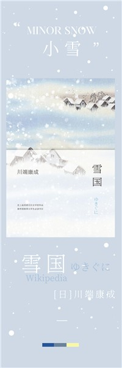
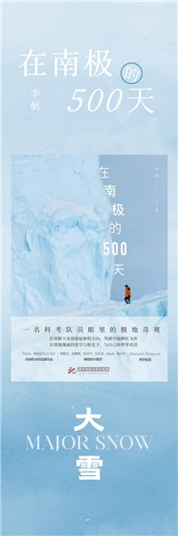
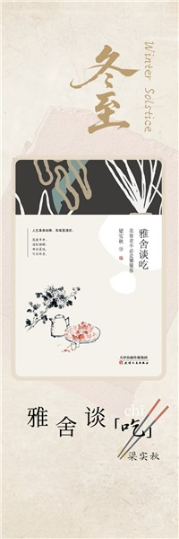
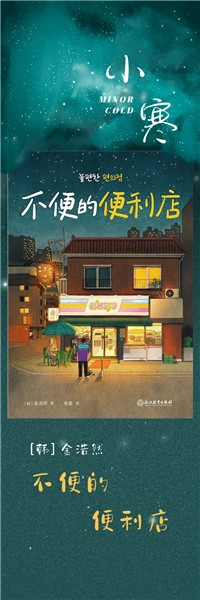
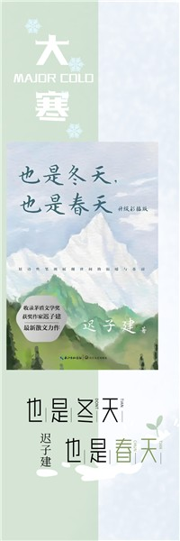
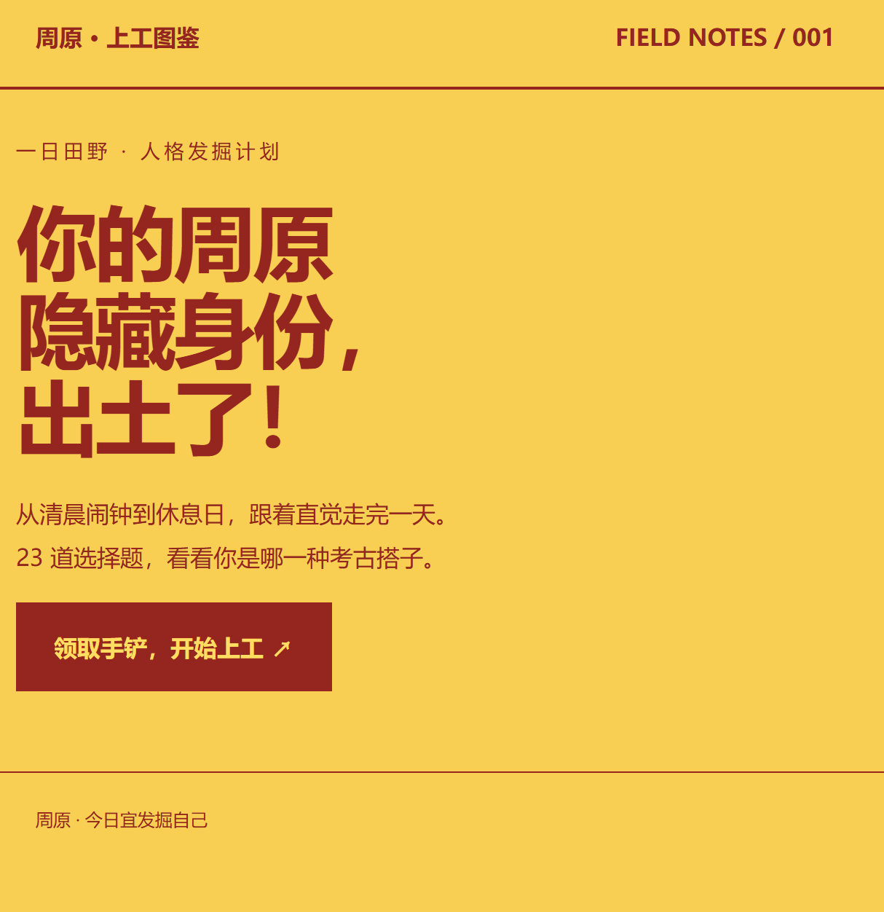
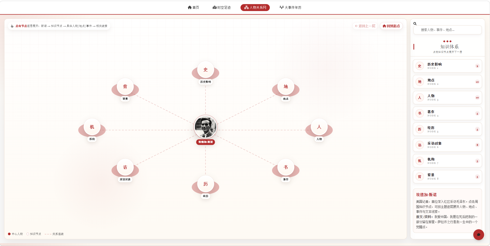

21 考古徒
参与班级公众号运营，组织考院日常、摄影、活动回顾和生日祝福等内容。账号用户从 0 增至 300+。
阅读《21级考院恋爱秘籍》READING WITH THE RHYTHM OF TIME
二十四节气书签 · 一节气，一本书
点击书签放大，再选「看背面」查看书籍介绍。





EDITORIAL & CAMPAIGN DESIGN
征订海报 · 会议物料 · 三折页 · 吉祥物
CONTENT OPERATIONS
参与班级公众号运营，组织考院日常、摄影、活动回顾和生日祝福等内容。账号用户从 0 增至 300+。
阅读《21级考院恋爱秘籍》2023 年周原考古实习期间担任宣传组组长，协同完成选题、分工、采写与排版。运营期间用户增长超过 100%。
阅读《2023周原考古吉祥物，登场！》DIGITAL PROJECTS

